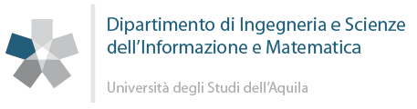

Juri Di Rocco
| |  |

Edificio Alan Turing
Via Vetoio 67100
L'Aquila, Italy
I am a tenure-track Assistant Professor (RTD/B) at the Department of Information Engineering, Computer Science and Mathematics (DISIM) of the University of L’Aquila, in the Academic Recruitment Field 01/B1 – Informatics (INFO-01/A). I hold the Italian National Scientific Qualification as Associate Professor (ASN 2021/2023, valid 12/12/2023 – 12/12/2035).
I am the Lead of the MODES Laboratory (MOdeling & Data Engineering in Software systems) and a member of the SWEn Research Group at DISIM. I obtained my PhD from the University of L’Aquila under the supervision of Alfonso Pierantonio and Davide Di Ruscio.
My research interests include Software Engineering, Model-Driven Engineering (MDE), Mining Software Repositories, and Recommender Systems for Software Engineering. More recently, my work has focused on the application of Large Language Models (LLMs) and Deep Learning to software engineering problems, including technical debt detection, energy efficiency of model transformations, and cloud-based modeling platforms. I have authored over 80 publications in international journals, conferences, and workshops.
I am a PC member of ICSE 2026, ICSE 2027, and MODELS 2026, and Workshops & Tutorials Co-Chair of SANER 2026. I served as keynote speaker at LLM4MDE 2024. I am involved in the EU projects MOSAICO (Horizon Europe, since 2025) and AIM-PRO (since 2026, WP2 Leader), and previously in CROSSMINER, TYPHON, and EMELIOT (PRIN 2021).
I am reviewer for:
Selected recent publications:
- Duc S. H. Nguyen et al., Automated Summarization of Software Documents: An LLM-based Multi-Agent Approach, Automated Software Engineering (ASE), 2026.
- Juri Di Rocco et al., On the use of large language models in model-driven engineering, Software and Systems Modeling (SoSyM), 2025.
- Francesca Arcelli Fontana et al., Binary and multi-class classification of Self-Admitted Technical Debt, Information and Software Technology (IST), 2025.
- Claudio Di Sipio et al., LEV4REC: A feature-based approach to engineering RSSEs, Journal of Computer Languages (COLA), 2024. Best Paper Award.
- Phuong T. Nguyen et al., GPTSniffer: A CodeBERT-based classifier to detect source code written by ChatGPT, Journal of Systems and Software (JSS), 2024.
- Juri Di Rocco et al., DeepMig: A transformer-based approach to support coupled library and code migrations, IST, 2024.
- Costanza Alfieri et al., Exploring user privacy awareness on GitHub: an empirical study, EMSE, 2024.
- Phuong T. Nguyen et al., CrossRec: Supporting Software Developers by Recommending Third-party Libraries, JSS, 2020. Best Paper Award.
Events I'm involved in
| Feb 1, 2026 | WP2 Leader in EU project AIM-PRO — AI Literacy for Multidisciplinary Professional Readiness and Outreach |
| Oct 1, 2025 | PC Member at ICSE 2026 and ICSE 2027 |
| Sep 1, 2025 | Workshops and Tutorials Co-Chair at SANER 2026 |
| Jan 1, 2025 | Joined EU Horizon Europe project MOSAICO — Multi-agent Orchestration for Software AI Collaboration |
| Sep 22, 2024 | Keynote speaker at LLM4MDE 2024 workshop (co-located with MODELS 2024) |